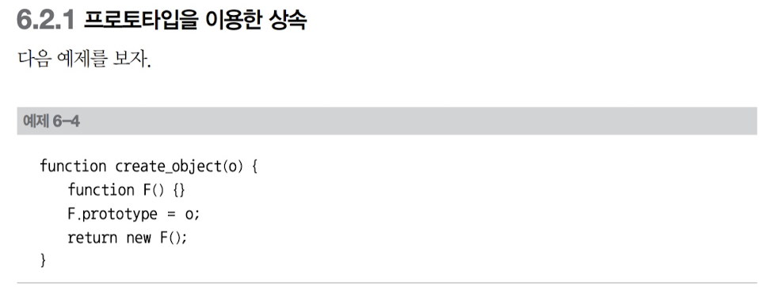
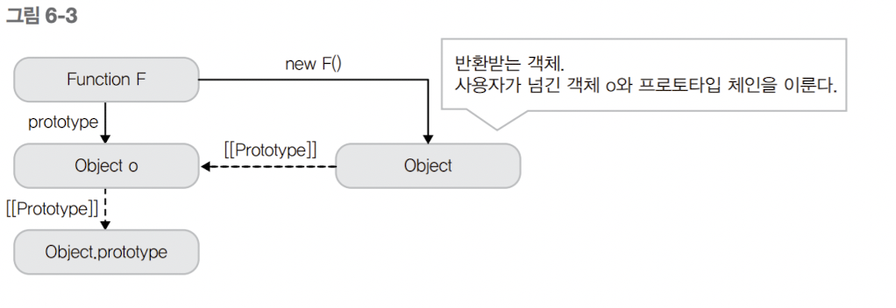
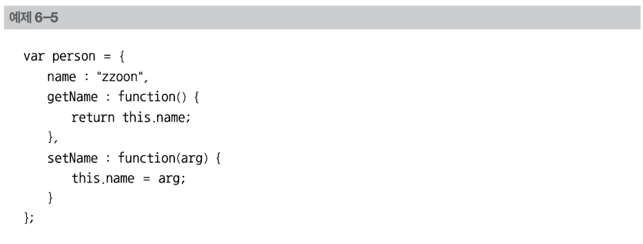
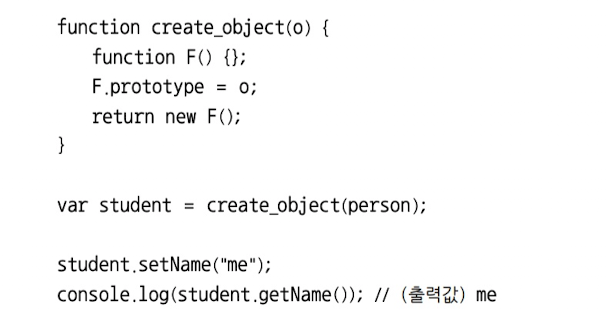
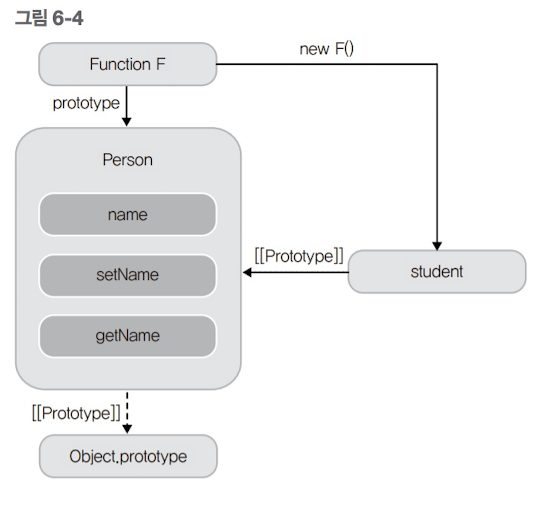
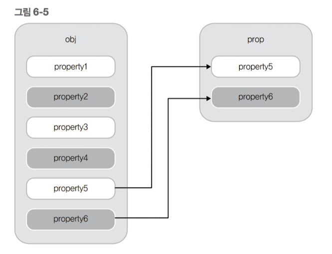
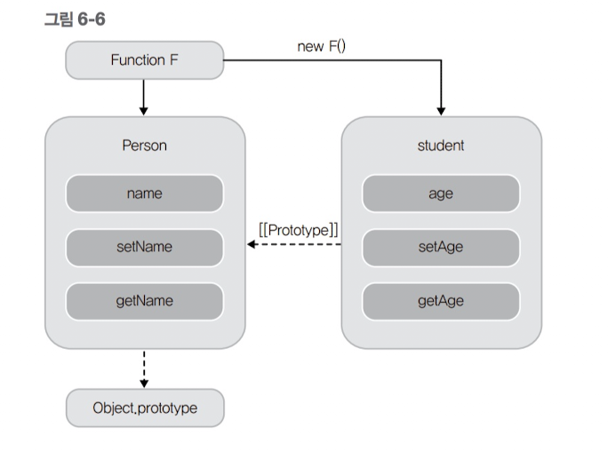

상속_프로토타입을 이용한 상속
자바스크립트는 클래스 기반으로 하는 전통적인 상속을 지원하지는 않는다. 하지만 자바스크립트 특성 중 객체 프로토타입 체인을 이용하여 상속을 구현해낼 수 있다. 이러한 상속의 구현 방식은 크게 두 가지로 구분할 수 있는데, 하나는 클래스 기반 전통적인 상속 방식을 흉내 내는 것이고, 다른 하나는 클래스 개념 없이 객체의 프로토타입으로 상속을 구현하는 방식이다. 이를 프로토타입을 이용한 상속이라고 한다. 자바나 C++에 익숙한 개발자는 전통적인 상속의 형태가 익숙할 것이다. 클래스와 생성자 등의 개념이 들어가 있기 때문이다. 하지만 프로토타입을 이용한 상속은 객체 리터럴을 중심으로 철저히 프로토타입을 이용하여 상속을 구현해낸다. 이 책에서는 프로토타입을 이용한 상속을 먼저 소개하고, 클래스 기반의 상속을 소개하겠다.

이 코드는 더글라스 크락포드가 자바스크립트 객체를 상속하는 방법으로 오래 전에 소개한 코드이다. 조금 과장해서 말하면 이 세줄의 코드를 이해하면 자바스크립트에서의 프로토타입 기반의 상속을 다 배운 것이나 다름없다. 이 세줄의 코드는 언뜻 보면 쉬워 보이지만 이해하기 쉬운 코드는 아니다. 다음 그림을 보자.

create_object() 함수는 인자로 들어온 객체를 부모로 하는 객체를 생성하여 반환한다. 그림을 보면 새로운 빈 함수 객체 F를 만들고, F.prototype 프로퍼티에 인자로 들어온 객체를 참조한다. 함수 객체 F를 생성자로 하는 새로운 객체를 만들어 반환한다. 이렇게 반환된 객체는 부모 객체의 프로퍼티에 접근할 수 있고, 자신만의 프로퍼티를 만들 수도 있다. 이렇게 프로토타입의 특성을 활용하여 상속을 구현하는 것이 프로토타입 기반의 상속이다. 참고로 앞에서 소개한 create_object() 함수는 ECMAScript 5에서 Object.create() 함수로 제공되므로, 따로 구현할 필요는 없다. 단지, 이 함수의 코드로 프로토타입 기반 상속의 이해를 돕고자 사용한 것이다. 다음 예제는 앞에서 소개한 create_object() 함수를 이용하여 상속을 구현한 예제이다.


person 객체를 상속하여 student 객체를 만들었다. 프로토타입 기반 상속의 특징이 보이는가? 클래스에 해당하는 생성자 함수를 만들지도 않았고, 그 클래스의 인스턴스를 따로 생성하지도 않았다. 단지 부모 객체에 해당하는 person 객체와 이 객체를 프로토타입 체인으로 참조할 수 있는 자식 객체 student를 만들어 사용하였다. 이와 같은 방식으로 상속의 개념을 구현해낸 것이다. 에제 6-5를 그림으로 표현하면 다음과 같다.

지금까지는 부모 객체의 메서드를 그대로 상속받아 사용하는 방법을 살펴보았다. 여기에서 자식은 자신의 메서드를 재정의 혹은 추가로 기능을 더 확장시킬 수 있어야 한다. ==================================== student.setAge = function(age) {...} student.getAge = function(){...} ==================================== 단순히 앞과 같이 그 기능을 더 확장시킬 수는 있다. 하지만 이렇게 구현하면 코드가 지저분해지기 십상이다. 보다 깔끔한 방법을 생각해보자. 자바스크립트에서는 범용적으로 extend()라는 이름의 함수로 객체에 자신이 원하는 객체 혹은 함수를 추가시킨다. 여기서는 가장 유명한 자바스크립트 라이브러리 중 하나인 jQuery의 extend() 함수를 살펴보고 이를 활용하는 방법을 생각해보자. jQuery 1.0의 extend 함수는 다음과 같이 구현되었다. ================================================================= jQuery.extend = jQuery.fn.extend = function(obj, prop){ if (!prop) { prop = obj; obj = this; } for (var i in prop ) obj[i] = prop[i]; return obj; } ================================================================= 이 코드를 분석해보자. ================================================================= jQuery.extend = jQuery.fn.extend = ... , ================================================================= jQuery.fn은 jQuery.prototype 이다. 따라서 앞 코드가 의미하는 바는 jQuery 함수 객체와 jQuery 함수 객체의 인스턴스 모두 extend 함수가 있겠다는 말이다. 즉, jQuery.extend()로 호출할 수도 있고, var elem = new jQuery(...); elem.extend();의 형태로도 호출할 수 있음을 뜻한다. ================================================================= if ( !prop ) { prop = obj; obj = this; } 이는 extend 함수의 인자가 하나만 들어오는 경우에는 현재 객체(this)에 인자로 들어오는 객체의 프로퍼티를 복사함을 의미하고, 두 개가 들어오는 경우에는 첫 번째 객체에 두 번째 객체의 프로퍼티를 복사하겠다는 것을 뜻한다. ================================================================= for ( var i in prop ) obj[i] = prop[i]; ================================================================= 루프를 돌면서 prop의 프로퍼티를 obj로 복사한다.

예제 6-6에서는 얕은 복사를 사용하는 extend() 함수를 사용하여 student 객체를 확장시켰다. extend() 함수는 사용자에게 유연하게 기능 확장을 할 수 있게 하는 주요 함수일 뿐만 아니라, 상속에서도 자식 클래스를 확장할 때 유용하게 사용되므로 반드시 기억하자. 6.4 객체지향 프로그래밍 응용 예제에서는 프로토타입 체인과 extend() 함수를 이용하여 사용자가 상속을 직관적으로 쉽게 구현할 수 있게 도와주는 함수를 소개한다.
